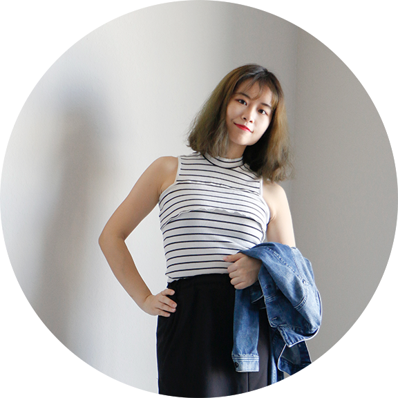

Hi there, this is Zihan, welcome to my page.
Let me tell you something about myself.
- Get Started on the Path of Creativity
I was versatile from an early age. Specifically, I was fascinated by all the fields of art, such as painting, paper-cutting, paper-folding, and electronic music, and reaped many rewards in several spheres. With strong passion for art, I applied for and then was admitted into the Media and Communication program at Chang Gung University. Before I knew further about my major, the first challenge I had to face is the culture shock triggered by diversified cultural environments, from climates, local cuisines, languages, and costumes, to behaviours, population density, and political and economic contexts. In the process of adapting to those changes, instead of being confined to diversities within sight, I gradually learnt to broaden my horizons, which were very conducive to my art creation.
- Enlighten
On the path towards the peak of art, the performance artist Marina Abramović astounded me most. Before I knew her, I had failed to appreciate or tolerate contemporary art, because I was a follower of the “aesthetics is supreme” assertion, that is, all the pieces of my works must conform to the rigorous standards of classical aesthetics. Then I got to know Marina Abramović’s works: they were hailed setting the world on fire, because they seek the boundary between humans and environment and wander around the edges of logic and illogic. As for Marina Abramović herself, she has been pursuing art to the fullest on the spiritual plane. These perceptions of artistic pursuit have made a difference to my creation works later.
- Always be Curious and Eager to learn
For me, creativity is more lifestyle than an ability. I always seek to do something special everyday in my life, for example, wearing zombie makeup to class and see how people react to it, which is fun to me. Besides, I never stop thinking about the subtle inner connections between things. The thinking process happens spontaneously. In Chinese there’s a proverb “温故知新”, meaning you’ll gain new knowledge by reviewing the what you’ve already learned.